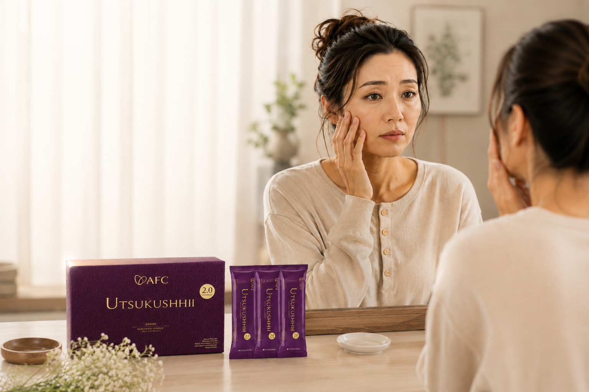
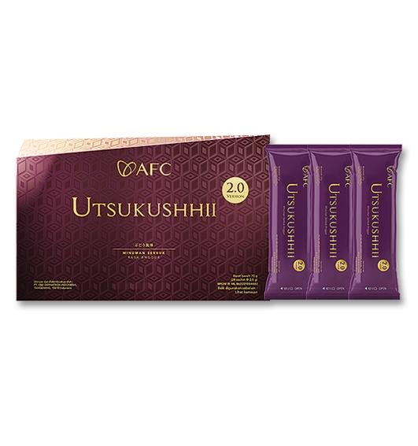
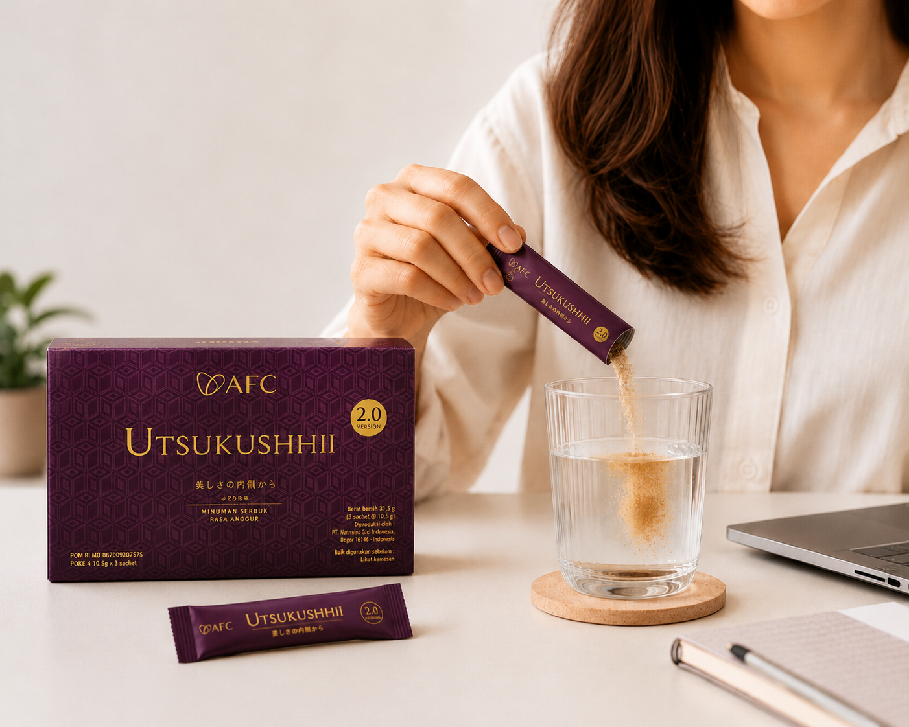

Aku mulai sadar...
Wajah sekarang berubah pelan-pelan. Dulu begadang sedikit masih kelihatan segar. Sekarang? Tidur cukup pun kadang wajah tetap terlihat lelah.
Pelajari Utsukushhii
"Kita sering sibuk merawat semua orang..."
Anak. Suami. Pekerjaan. Rumah. Semuanya dapat perhatian. Kecuali diri kita sendiri.
Padahal merasa cantik, sehat, dan percaya diri bukanlah kemewahan. Itu kebutuhan.
Dan semuanya dimulai dari langkah kecil yang dilakukan setiap hari. Mulai rawat dari dalam sebelum tanda-tandanya makin terlihat.
Tanpa sadar, kebiasaan ini terus terjadi setiap hari.
Skincare sudah rutin, tapi hasil terasa jalan di tempat
Stres dan aktivitas padat bikin wajah terlihat lebih lelah
Kurang tidur dan pola hidup yang kurang teratur
Asupan nutrisi harian sering tidak terpenuhi dengan baik
Pernah gak sih ngerasa kayak gini?
- Wajah terlihat kusam padahal skincare gak pernah skip
- Bangun tidur tapi tetap terlihat capek
- Orang lain sering bilang, "Kamu lagi capek ya?" Padahal sebenarnya enggak
- Kulit terasa lebih kering dan kurang kenyal
- Kantung mata makin terlihat
Kalau iya, kamu gak sendirian.
Banyak wanita baru sadar ketika perubahan itu mulai terlihat jelas di cermin.
Kita sering sibuk merawat semua orang... Anak, Suami, Pekerjaan, Rumah. Semuanya dapat perhatian, kecuali diri kita sendiri.

Rawat dari Dalam, Bukan Sekadar Menutupi dari Luar
Banyak orang fokus merawat kulit dari luar. Padahal kulit yang sehat dan bercahaya dimulai dari tubuh yang mendapatkan nutrisi yang cukup dari dalam.
AFC Utsukushhii adalah suplemen kecantikan premium dari Jepang yang membantu menjaga kesehatan kulit, membantu kulit tampak lebih cerah, serta mendukung daya tahan tubuh agar kamu tetap tampil fresh di tengah aktivitas yang padat.
Langkah sederhana untuk membantu menjaga kecantikan dan kesehatan dari dalam setiap hari.
Lihat Manfaat UtamaKenapa Banyak Orang Memilih Utsukushhii?
Kulit Tampak Lebih Cerah dan Fresh
Membantu menutrisi kulit dari dalam sehingga wajah tampak lebih sehat, lembap, dan bercahaya alami.
Membantu Menjaga Elastisitas Kulit
Kombinasi nutrisi premium membantu menjaga kulit tetap terasa kenyal dan terlihat lebih sehat seiring bertambahnya usia.
Bantu Tetap Terlihat Fresh di Tengah Aktivitas Padat
Nutrisi yang cukup membantu tubuh tetap prima sehingga wajah tidak mudah terlihat lelah dan kusam.
Cantik dan Sehat Berjalan Bersama
Bukan hanya untuk penampilan, tetapi juga membantu menjaga daya tahan tubuh agar tetap aktif menjalani aktivitas sehari-hari.
Investasi terbaik adalah pada dirimu sendiri.
Ekspektasi orang lain mungkin gak ada habisnya. Tapi hak kamu untuk tetap merasa cantik, sehat, dan percaya diri adalah prioritas.
Cukup 1 sachet Utsukushhii setiap hari sebagai ritual self-care sederhana untuk membantu menjaga kecantikan dan kesehatan dari dalam.
AFC UTSUKUSHHII DAILY HABIT
Gak harus terlihat sempurna. Cukup merasa nyaman saat melihat diri sendiri di cermin. Karena rasa percaya diri yang paling berharga datang dari perasaan bahwa kita sudah merawat diri dengan baik.

Kalau masih bingung apakah Utsukushhii cocok untuk kebutuhan kamu, konsultasikan dulu dengan tim kami. Gratis dan tanpa kewajiban membeli.
Konsultasi Gratis via WhatsApp